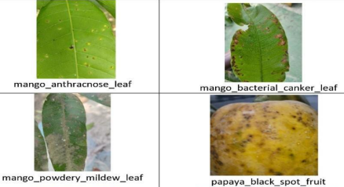
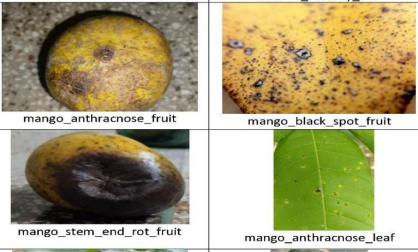
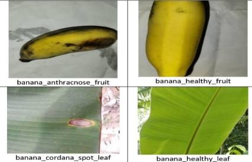
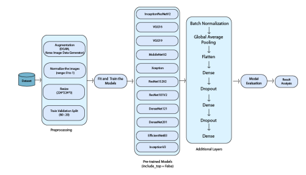
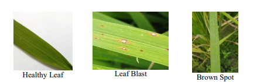
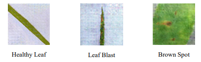
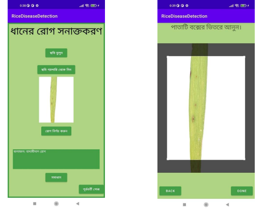

Projects
AgroVisionBD is a curated image dataset developed for research on fruit and leaf disease identification using computer vision and machine learning. It contains 5,280 original RGB images across 18 classes, covering healthy and diseased banana, mango, and papaya fruits and leaves. The dataset was collected under diverse real-world conditions to support the development and evaluation of robust disease detection models.
Publicly available on Figshare: DOI



This project focused on developing a deep learning-based approach for detecting rice blast disease from leaf images. It involved collecting and preparing image data, implementing Convolutional Neural Network (CNN) models, and using Deep Convolutional Generative Adversarial Networks (DCGAN) for image augmentation. The project also included developing a mobile application to make rice disease detection more accessible.
Publicly available on GitHub: Link



